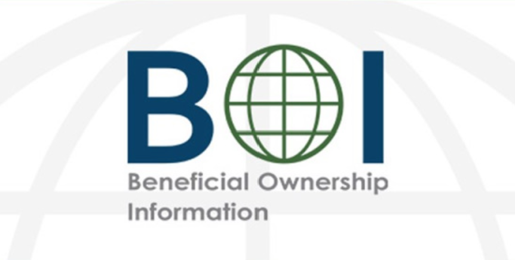
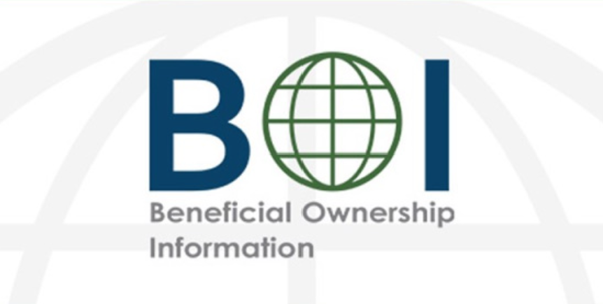

Es un informe de carácter obligatorio que deben hacer las empresas y presentarlo ante el FINCEN, donde se detalla la información sobre los propietarios y beneficiarios de la misma.
- Si su empresa fue creada antes del 1 de Enero de 2024, tendrá hasta el primero de Enero de 2025 para entregar el reporte BOI.
- Si su empresa fue creada en el 2024, se debe hacer el reporte dentro de los 90 días corridos después de recibir un aviso público de que la creación de su empresa o el registro es efectivo, lo que ocurra primero.
- Si su empresa se creó o registró a partir del 1 de Enero de 2025, debe presentar el reporte dentro de los 30 días corridos después de recibir un aviso público de que la creación de su empresa o el registro es efectivo, lo que ocurra primero.
- La omisión o retraso en presentar el reporte BOI puede llevar a multas de hasta USD $500 por día. Para mas información visite: https://www.fincen.gov